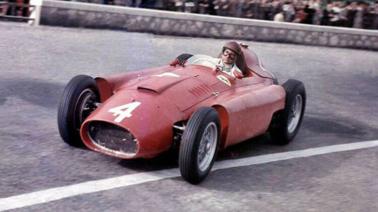

Juan Manuel Fangio

Small Bio
Juan Manuel Fangio Déramo (24 June 1911 – 17 July 1995), nicknamed El Chueco ("the bowlegged one", also commonly
translated as "bandy legged") or El Maestro ("The Master"), was an Argentine racing car driver. He dominated the
first decade of Formula One racing, winning the World Drivers' Championship five times.
Racing Records
- 1938: Turismo Carretera
- 1940: Turismo Carretera
- 1940: Gran Premio del Norte
- 1940: Gran Premio del Sur
- 1941: Turismo Carretera
- 1941: Gran Premio del Norte
- 1947: Turismo Carretera
- 1948: Turismo Carretera
- 1949: Turismo Carretera
- 1949: Gran Premio Internacional del Norte
- 1950: Turismo Carretera
- 1950: Gran Premio Internacional del Norte
- 1951: Turismo Carretera
- 1953: Formula One
- 1954: Formula One
- 1955: Formula One
- 1956: Formula One
- 1957: Formula One
- 1958: Formula One
- 1959: Formula One
Complete Formula 1 Teams
- 1950: Alfa Romeo
- 1951: Alfa Romeo
- 1952: Maserati
- 1953: Maserati
- 1954: Maserati
- 1955: Mercedes-Benz
- 1956: Ferrari
- 1957: Maserati
- 1958: Maserati
- 1958: Ferrari
- 1959: Ferrari